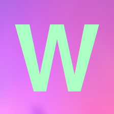

<ion-side-menus>

    <!-- Left menu -->
    <ion-side-menu side="left">
        <ion-side-menu-content edge-drag-threshold="true" drag-content="true">
            <a class="item">
                
            </a>
            <a menu-close="" href="#/events/new" class="item">
                <i class="icon ion-plus-circled"></i>
                Nouveau rendez-vous
            </a>
            <a menu-close="" href="#/events/agenda" class="item">
                <i class="icon ion-ios-calendar"></i>
                {{agendaTitle}}
            </a>
            <a menu-close="" href="#/events/friends" class="item">
                <i class="icon ion-ios-help"></i>
                {{friendsEventTitle}}
            </a>
            <a menu-close="" href="#/friends/new" class="item">
                <i class="icon ion-person-add"></i>
                {{new.title}}
            </a>
            <a menu-close="" href="#/friends/pending" class="item">
                <i class="icon ion-person-stalker"></i>
                {{pending.title}}
            </a>
            <a menu-close="" href="#/friends/my" class="item">
                <i class="icon ion-ios-people"></i>
                {{my.title}}
            </a>
            <a menu-close="" href="#/profile" class="item">
                <i class="icon ion-person"></i>
                Mon profil
            </a>
            <a menu-close="" href="#/logout" class="item">
                <i class="icon ion-log-out"></i>
                Se d&#xE9;connecter
            </a>
        </ion-side-menu-content>
    </ion-side-menu>

    <!-- Main content, usually <ion-nav-view> -->
    <ion-side-menu-content>
        <!-- The nav bar that will be updated as we navigate -->
        <ion-nav-bar class="bar-dark">
            <ion-nav-buttons side="left">
                <!-- Toggle left side menu -->
                <button menu-toggle="left" class="button button-icon icon ion-navicon"></button>
            </ion-nav-buttons>
        </ion-nav-bar>
        <!-- tabs -->
        <ion-tabs class="tabs-icon-top tabs-dark">
<!--            <ion-tab title={{agendaTitle}} href="#/events/agenda"
                    icon="ion-ios-calendar" class="woozup-pink">
                <ion-nav-view name="agendaevents"></ion-nav-view>-->
            </ion-tab>
            <ion-tab title={{new.title}} href="#/friends/new"
                    icon="ion-person-add" badge="new.badge"
                    badge-style="badge-energized">
                <ion-nav-view name="newfriends"></ion-nav-view>
            </ion-tab>
            <ion-tab title={{pending.title}} href="#/friends/pending"
                    icon="ion-person-stalker" badge="pending.badge"
                    badge-style="badge-energized">
                <ion-nav-view name="pendingfriends"></ion-nav-view>
            </ion-tab>
            <ion-tab title={{my.title}} href="#/friends/my" icon="ion-ios-people">
                <ion-nav-view name="myfriends"></ion-nav-view>
            </ion-tab>
        </ion-tabs>
    </ion-side-menu-content>
</ion-side-menus>
